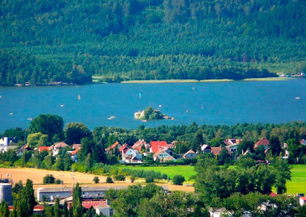

Озеро Махове
Озеро Махи, розмовно Махач, ще відоме як Великий рибник або Великий Докський рибник (нім. Mácha-See, історичні назви Großteich або Hirschberger Großteich), це великий ставок на території міста Докси в районі Чеська Липа, Ліберецький край, площею 312 га, шостий за величиною у Чехії. Він був заснований у 14 столітті за велінням чеського короля та імператора Священної Римської Імперії Карла IV. В 30-х роках 19 століття в озера неодноразово зупинявся поет Карел Гінек Маха, який помістив у його найближче оточення сюжет відомого ліро-епосу «Май». Нині він використовується в основному для відпочинку — це популярне та часто відвідуване туристичне місце. В його околицях є багато місць для відпочинку та кемпінгів.